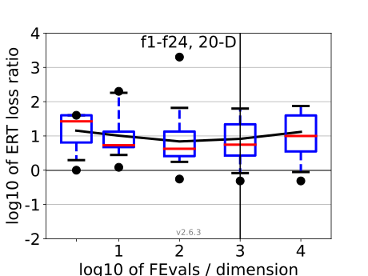
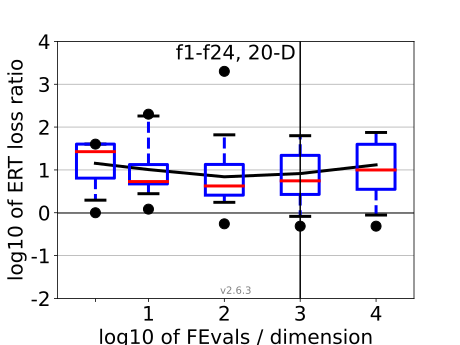

All functions in 5-D and 20-D
f1–f24 in 5-D, maxFE/D=1000
| #FEs/D | best | 10 % | 25 % | med | 75 % | 90 % |
|---|---|---|---|---|---|---|
| RLUS/D | 1e3 | 1e3 | 1e3 | 1e3 | 1e3 | 1e3 |
| 2 | 1.1 | 1.5 | 2.2 | 3.3 | 5.0 | 10 |
| 10 | 1.6 | 1.8 | 3.0 | 3.3 | 4.8 | 11 |
| 100 | 2.5 | 6.6 | 8.9 | 13 | 21 | 88 |
| 1e3 | 5.7 | 9.5 | 19 | 39 | 70 | 1.9e2 |
| 1e4 | 11 | 15 | 38 | 1.3e2 | 2.1e2 | 3.7e2 |
f1–f24 in 20-D, maxFE/D=1000
| #FEs/D | best | 10 % | 25 % | med | 75 % | 90 % |
|---|---|---|---|---|---|---|
| RLUS/D | 1e3 | 1e3 | 1e3 | 1e3 | 1e3 | 1e3 |
| 2 | 1.0 | 1.8 | 6.2 | 27 | 40 | 40 |
| 10 | 1.2 | 2.6 | 4.7 | 5.3 | 13 | 2.0e2 |
| 100 | 0.55 | 1.6 | 2.5 | 4.2 | 15 | 74 |
| 1e3 | 0.49 | 0.76 | 2.3 | 5.6 | 25 | 67 |
| 1e4 | 0.49 | 0.76 | 3.3 | 10.0 | 43 | 79 |
Separable functions in 5-D and 20-D
Misc. moderate functions in 5-D and 20-D
Ill-conditioned functions in 5-D and 20-D
Multi-modal functions in 5-D and 20-D
Weak structure functions in 5-D and 20-D
ERT loss ratios (see the previous figure for details). Each cross (+) represents a single function, the line is the geometric mean.{kind=link}
{kind=link}
{kind=link}
{kind=link}
{kind=link}
{kind=link}
{kind=link}
{kind=link}
{kind=link}
{kind=link}
{kind=link}